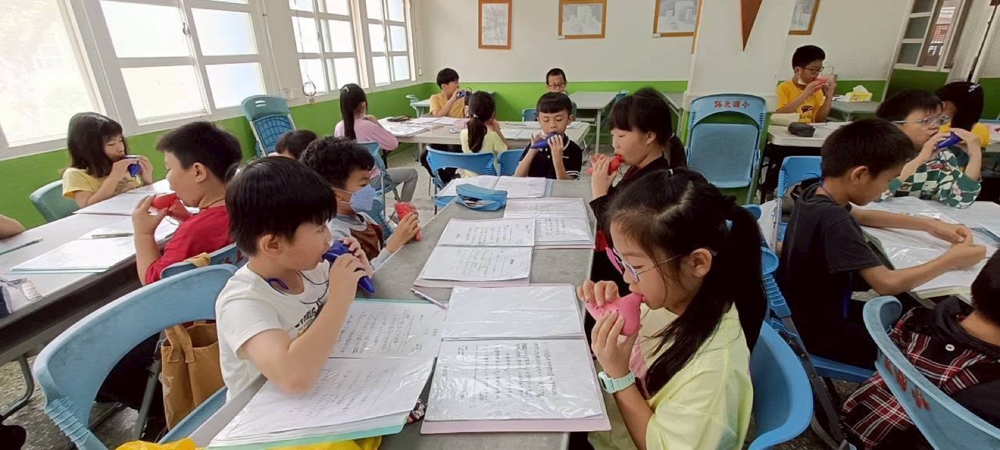

Lushang Elementary's Ocarina Club was founded in September 2017. Guided by a belief in well-rounded learning, our principal made sure every student at the school could join the club — with the school fully funding an ocarina for every single student, hoping each child could play out a melody all their own. 路上國小陶笛社團於2017年9月成立，校長秉持著多元學習的理念，讓全校每位學生皆參與陶笛社團活動，且由學校全額補助每位學生一把陶笛，希望學生能用悠揚的樂音譜出屬於自己的生命旋律。

Though the club had only been running for a little over half a year, the whole school threw itself in wholeheartedly — during recess or after lunch, the sound of ocarinas could be heard drifting across campus. Guided by homeroom teachers and Ms. Liao Wan-Ju, students held a community showcase at the end of term, and were even invited to perform at a neighborhood temple's Lunar New Year celebration. 雖然陶笛社團才成立短短半年多的時間，但全校積極投入，不論是在下課時間或是午餐後，都可以聽見悅耳的笛聲迴盪在校園中。在各班老師及廖婉茹老師的指導之下，學生除了在期末辦理陶笛社區成果發表會外，也受邀至社區廟宇的新春表演。